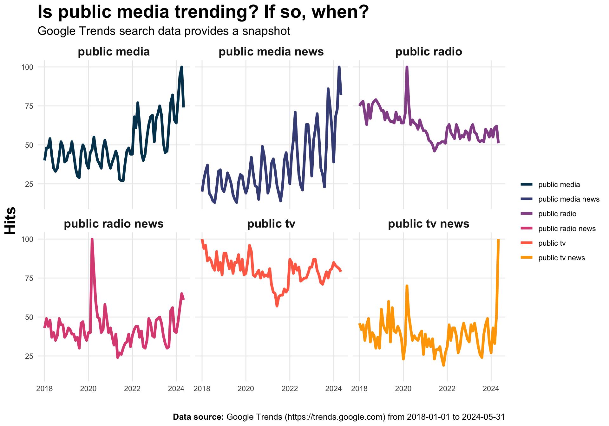

The Hex Update: Issue 001
the hex update
media
Key insights and what I learned about the media industry in June 2024
Introducing The Hex Update
👋 Welcome to The Hex Update, a monthly blog post summarizing media indsutry topics I found to be interesting and relevant. I’m Collin, a media research analyst working in public media (learn more about me here).
My aim for these posts is to make sense of what’s happening in the media industry, one topic at a time. The Media Industry is big. There’s no way I could ever know everything. But I can attempt to learn and hopefully understand it a little more with every post I write. I learn best through writing. Thus, my intention is to treat each post as a form of ‘learning out loud,’ where I share what I’m learning and thinking about on a monthly basis.
If you’re here looking for someone with all the answers, they’re not here. It would be naive of me to think I can provide answers to all the challenges facing the media industry. There are much smarter people than myself exploring these topics in depth and have more thoughtful answers to what’s impacting the media industry. Reach out; I can provide a list. One goal of these posts, though, is to be a space to highlight the views and work of these experts.
You may also come across my other work on this site, which includes posts more focused on my data science interests. For the time being, I’ll lump all these posts together–you’re welcome to deduct points from my content strategy. Feel free to explore these as well. If you’re the handful of readers looking for my data science work, I welcome you to read these posts, though you may be disappointed as they’re specifically focused on topics relevant to the media industry, and they may have little to do with data science.
Why the name ‘The Hex Update’?
Naming things is hard. I found inspiration in what I like. Aesthetically, I’m drawn to hexagons. Hexagonal structures are known for their efficiency: an aspirational goal of these posts. Every month I’ll strive to make each post a quick overview of topics I’ve found important and interesting to the media industry. I specifically aim to cover topics relevant to public media professionals; It’s the industry I work in. Just as a hexagon has six sides, the goal is to cover six topics, ideas, or articles a month as efficiently as possible. Sometimes more, sometimes less.
I do hope you find these useful, if not at least somewhat interesting. If so, I’d love to hear from you.
Some obligatory statements
Note
You can skip these next few points and go to the next section if you like. The intent is to make it clear what these posts are and are not from the start.
These posts do not reflect the views of my employer or groups I hold membership.
I may use artificial intelligence to improve my writing productivity and revision process. However, all ideas in these posts are mine (unless otherwise noted), and I will review any output used in these posts before posting. If I use AI to generate content, I will make it clear what prompt was used.
I do my best to attribute and cite the work of others. If I miss or have overlooked someone, please let me know and I’ll make edits. I want to give credit wherever credit is due.
None of this work has been peer-reviewed (unless otherwise noted). Any conclusions derived from this work need to account for this limitation. Beware of my half-baked ideas. Kindly let me know if I get anything wrong.
With all that out of the way, let’s get started 🚀
What was interesting last month?
Google Zero
If you have a website, you likely rely on referral traffic. What would happen to your site (or your business for that matter) if this traffic suddenly went away? Nilay Patel from the Verge’s Decoder Podcast has been exploring this topic recently. Nilay and folks (i.e., some major tech and media company CEOs) have some interesting thoughts and perspectives, since it’s been posited that Google Zero is already here.
Here are some links to go deeper
How to play the long game, with New York Times CEO Meredith Kopit Levien (Decoder podcast). Listen around 19:50 to hear more discussion specific to Google Zero.
Fandom runs some of the Biggest communities on the internet - Can CEO Perkins Miller keep them happy? (Decoder podcast episode) Listen around 42:13 to hear more discussion closely to Google Zero.
What’s the takeaway?
I came away with several takeaways from these conversations, but I think it comes down to the idea that a business or media property can’t be built on referral traffic anymore. Or, at the very least, it’s on shaky ground if the business model solely relies on referral traffic from other platforms. Simply put, according to Nilay, if you can’t explain what your business is without referral traffic, then do you really have a business?
Building an audience online is challenging. In fact, Nilay suggests that if you were to create a media business today, you’d likely start on some video platform rather than starting from the point of ‘building a website’ first, followed by other tactics.
It’s about the value you create. If you’re creating content, products, and experiences people are willing to spend their time and money on, then referral traffic shouldn’t matter. Perhaps this is an opportunity to recenter the focus back to what’s being created, rather than creating content to rank high by gaming an algorithm. I know it’s aspirational but unrealistic when confronted with economic realities.
Google’s AI overviews
If you’ve used Google as of late, your search queries have likely returned responses from Google Search’s new AI Overviews feature. The utility provided to users seems interesting. It’s certainly made my search experience a little better. However, I’ve noticed some questions being raised about the feature as it relates to referrals: If users receive the answers they want natively within the AI overviews, will they still navigate to the sites of other publishers? According to Google, users are clicking links in AI overviews more than they would if the links were included as a traditional web listing for that query. However, data supporting this is yet to be released or made available to publishers. Some have even gone so far as to say this new feature could kill what’s left of the traffic sent to publishers, especially traffic sent to news publishers.
Here are some links to go deeper
- Publishers horrified at new Google AI feature that could kill what’s left of journalism (The_Byte)
- News publishers sound alarm on Google’s new AI-infused search, warn of ‘catastrophic’ impacts (CNN Business)
- Google CEO Sundary Pichai on AI-powered search and the future of the web (Decoder Podcast). The episode also includes some discussion about Google Zero and AI overviews. Listen around 07:32.
What’s the takeaway?
I believe the effect of this new feature is yet to be seen. It just rolled out in late May. More data will certainly help publishers assess this feature’s impact on referral traffic. However, it may be important for publishers to explore and better understand how AI Overviews work within Search, so as to identify strategies that result in content to rank high and be linked within these overviews. Indeed, I’m aware of the contradiction with the points I made above.
A snapshot of how news directors view the use of over-the-top (OTT) services and NextGen TV
A recent survey report by RTDNA and the Syracuse University Newhouse School of Public Communications provides a snapshot on how broadcasters are using over-the-top services (OTT) and NextGen TV (ATSC 3.0).
NextGen TV promises many enhancements for both consumers (i.e., better sound and video quality) and broadcasters (i.e., interactivity and addressibility), which is due to the combining of internet and television technologies. Although these enhancements make the future of TV exciting, the report makes a pretty blunt assertion:
But there’s a big difference between “operating” and actually doing something meaningful with [NextGen TV].
So how many broadcasters report doing something with NextGen TV? According to the report, only 20.9% of TV news directors say they are doing “something” with NextGen TV, which is slightly down from last year (25%). What about OTT services? According to survey respondents, 59.9% say they are “doing something” with OTT services. When it comes to all TV, the report states OTT is allowing broadcasters to ‘reach new audiences’ (70.1%), ‘go deeper with content’ (57.1%), and ‘make extra revenue’ (36.4%). The report includes a further breakdown by market size, which provides some more relevant context (i.e., broadcasters operating in smaller markets may not have the resources to manage their own OTT services).
Here’s a link to go deeper
What’s the takeaway?
Although NextGen TV is purported to provide many enhancements, adoption faces many hurdles. Many of which I myself–from a technology, tv viewer adoption, and regulatory standpoint–don’t fully understand. However, the report makes it clear: the majority of news directors have yet to do anything meaningful with NextGen TV. This certainly isn’t a criticism of the technology or about what it promises for audiences and broadcasters in the future. Rather it’s a question of whether the technology can overcome the obstacles it faces, be adopted by TV consumers, and become a technology utilized to deliver services.
As for OTT, these services are being utilized by a majority of broadcasters, especially to reach new audiences. Despite ‘making extra revenue’ being in the top 3, it was surprising to see the limited role OTT services play within broadcasters’ business models. I assumed this percentage would be much higher than 36.4%. Perhaps new revenue models will be created and explored in the future, resulting in OTT services playing a greater role in revenue generating functions.
Audience segmentation dashboard
One critical function for media organizations is to identify and understand their target audiences. According to researchers from the Northwestern University Spiegel Research Center, this process tends to be more gut-driven rather than data-driven. To aid this process and make it more data-driven, Jaewon Royce Choi created a dashboard that maps audience segments based on population data from various zip codes. It provides a useful interface to explore the various types of audiences reached when targeting different geographic locations. Check it out if you’re a community focused media organization who wants to make more data-driven audience targeting decisions.
Here’s a link to go deeper
What’s the takeaway?
The identification and exploration of target audiences can certainly be more data driven, if not at least more data informed. This tool is useful in this case; it makes data accessible to media organizations to allow for audience targeting decisions to be more data driven. Check it out and explore the communities your organization serves.
Aside from being a useful tool to explore various audience segments, this was a great reminder that a plethora of public data is available to make more data driven decisions when it comes to audience. Products just need to be developed to make this data more accessible to practitioners.
Are audiences worn out by the news?
A recent study released by the Pew Research Center explored how American’s get their news on various social media platforms. Although the study reports American’s news consumption on various social media platforms (e.g., Facebook, Instagram, X, and TikTok), I found the results on how worn out news consumers are with news on social media platforms informative. Specifically,
More than half of news consumers on three of the four sites studied at least sometimes feel worn out by the amount of news they see on these sites.
The report goes further by breaking down these results by each platform.
Here’s a link to go deeper
What’s the takeawy?
My initial reaction to this finding was to posit additional questions. What are the factors leading to this feeling of being worn out by the news on these platforms? Is it due to the amount of news users are confronted with? Is it a function of the type of news or how it is being produced? Or, does misinformation and disinformation play a role? I certainly don’t have the answers to these questions. However, publishers may want to consider factors they can control when publishing their content on these platforms. Moreover, publishers may also want to explore these questions with their audiences.
One plot to ponder 📈
I’m a data nerd 🤓. So, one recurring section will be a place to share some data I found interesting. Here’s one plot to ponder this month.
Since Google referral traffic and AI overviews were topics of focus this month, I wanted to explore Google Trend data related to public media searches over time. Specifically, I was interested in exploring Google search trends for the following terms:
- public media
- public tv
- public radio
- public media news
- public radio news
- public tv news
Here’s what I came up with:
There’s a few things to keep in mind when reviewing these trends. Hits represent actual search requests made to Google. However, hits are normalized to allow for relative comparisons to be made across time periods and terms. I used the Google Trends API to extract each term individually, rather than together. Extracting data this way allows for comparisons to be made over time for each term, but it takes away the ability to make comparisons across terms (i.e., we can’t conclude that public tv is trending higher than public radio using this chart). You can check out the full details about Google Trends data here. If you’re inclined to read a more in-depth explanation of how I did this, expand the call-out below to learn more.
Click here for more detailed information
I used the R programming language to extract, wrangle, and visualize Google Trends data. Specifically, I used the gtrends R package to extract data. Data was wrangled and visualized with functions from tidyverse R packages.
If you really, really want the in-depth details, you can view the code to do this here.
Wrap-up
The first month’s post is now filed. In this post, I highlighted six media industry topics I found interesting and learned about this past month. It started with an overview about Google Zero and its potential impacts on referral traffic. Staying on theme, the post discussed Google’s new AI overviews feature and what it could mean for publishers. Results on the use of NextGen TV and OTT services by broadcasters were presented. We then highlighted a tool to make audience targeting a little more data driven. The topic of news burnout was also discussed. I then wrapped up with one plot to ponder, which visualized some Google Trends data for terms related to public media.
I hope you found something interesting in this post, or at least that it presented something that made you think. Maybe you even discovered something useful. If not, at the very least I hope it made you feel a little more connected to someone trying to better understand and learn more about the media industry. I certainly can’t learn all of this on my own.
Until next month, cheers 🎉!
Reuse
Citation
BibTeX citation:
@misc{berke2024,
author = {Berke, Collin K},
title = {The {Hex} {Update:} {Issue} 001},
date = {2024-07-10},
langid = {en}
}
For attribution, please cite this work as:
Berke, Collin K. 2024. “The Hex Update: Issue 001.” July
10, 2024.